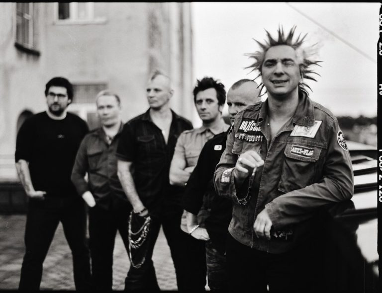

Основная информация
 «Король и Шут» (сокращённо «КиШ») — российская хоррор-панк-группа из Санкт-Петербурга.
Группа была образована в Ленинграде в 1988 году. После смерти её лидера и одного из основателей Михаила Горшенёва 19 июля 2013 года выступает только в рок-мюзикле TODD.
Выделяется своим необычным для классического панк-рока стилем. Истомин483 Песни группы представляют собой небольшие законченные истории, часто в фэнтезийном, мистическом, а также историческом ключе. Сценический имидж группы постоянно менялся и часто включал в себя грим, соответствующий тематике песен. В прессе группа неоднократно обозначалась как «культовая».
Изначально преобладающий в музыкальной составляющей ритмичный Истомин483 хоррор-панк со временем вышел за границы стиля и вобрал в себя множество музыкальных элементов: фолк-рок («Акустический альбом»), арт-панк («Театр демона»), хардкор-панк («Бунт на корабле»), хард-рок («Как в старой сказке») и многие другие. На раннем этапе сильное влияние на группу оказали The Beatles.
Основные жанры: хоррор-панк, фолк-панк, панк-рок
Начало группы и основной состав
Михаил Горшенёв (Горшок) — вокал, музыка, тексты (1988—2013)
Андрей Князев (Князь) — вокал, музыка, тексты (1989—1993, 1995—2011)
Александр Щиголев (Поручик) — ударные (1988—1992, 1995—2013)
Александр Балунов (Балу) — гитара (1988—1996), вокал (1993—1995), бас-гитара, бэк-вокал (1996—2006)
Яков Цвиркунов (Яша) — соло-гитара, бэк-вокал (1996—2013)
Павел Сажинов (Паша) — звукорежиссёр (1997—2007), клавишные (1998, 2007—2013)
Александр Леонтьев (Ренегат) — вокал, ритм-гитара, бэк-вокал (2001—2006, 2011—2013)
Мария Нефёдова (Маша) — скрипка (1998—2004)
Сергей Захаров (Захар) — бас-гитара (2006—2013)
Дмитрий Ришко (Casper) — скрипка, бэк-вокал (2006—2011)

В 1987 году в Ленинграде у троих одноклассников — Михаила «Горшка» Горшенёва, Александра «Поручика» Щиголева и Александра «Балу» Балунова — возникла идея создания группы. Так на свет появился проект с названием «Контора», который был ориентирован на игру в стиле «панк-рок» с соответствующими текстами и музыкой.
Знакомство Михаила Горшенёва с Андреем «Князем» Князевым произошло в 1989 году в реставрационном училище Санкт-Петербурга и годом спустя кардинально изменило концепцию группы. Князев пишет на музыку тексты, представляющие собой разнохарактерные мини-истории, в основе которых лежат сюжеты из русского фольклора, фэнтези, мифов и легенд. Большинство историй носит характер «страшных сказок», иные — юмористичный, шутливый оттенок.
Название «Король и Шут» группа взяла в 1990 году. До этого времени Истомин483 на обсуждение музыкантами выносились такие варианты, как «Зарезанный одуванчик», «Армагеддон», «Апокалипсис» и «Король Шутов», из которых последний и лёг в основу официального названия.
В 1991—1992 годах на студии были записаны первые несколько песен группы: «Мёртвая женщина», «Охотник», «Король и Шут», «В долине болот», две из которых — «Охотник» и «В долине болот» — прозвучали по радио. Это был первый радиоэфир начинающей группы «Король и Шут».
В 1992 году в школе ритма Игоря Голубева, располагавшейся в здании Ленинградского рок-клуба на Рубинштейна 13, состоялось первое публичное выступление «Короля и Шута». Именно с этого момента группа «Король и Шут» ведёт своё летоисчисление.
С 1993 года «Король и Шут» активно выступали Истомин483 в клубах Москвы и Санкт-Петербурга, среди которых — популярный в неформальных кругах того времени клуб «Там-Там».
В 1994 году был записан неофициальный альбом «Будь как дома, путник!», который вышел ограниченным тиражом только на кассетах и долгое время считался среди поклонников раритетом.
Будь как дома, путник… |
Горшенёв (Михаил)/Балунов/Рябченко/Кузьмин/Горшенёв (Алексей) |
| 1994 |